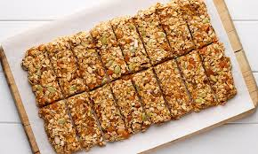
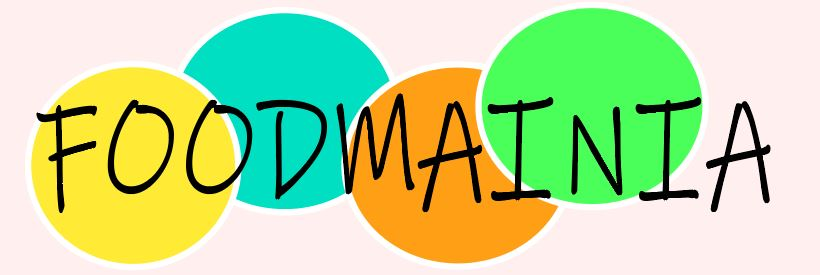
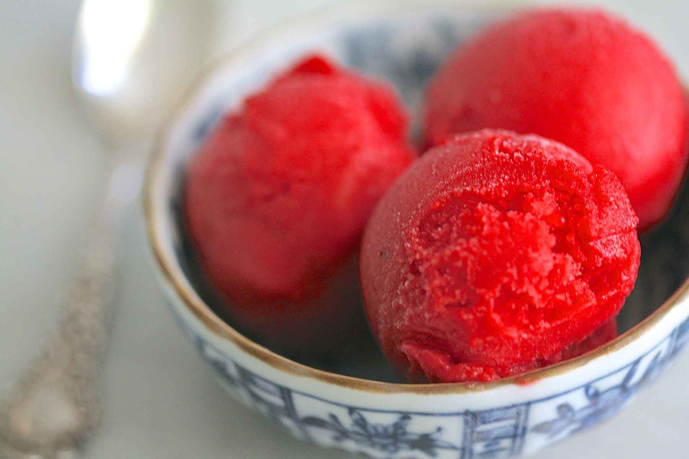
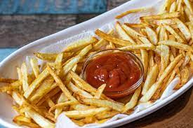

FOODMANIA
Snacks
This weeeks feature snack is.......GRANOLA BARS! These nutritriuos bites are great for the whole family!
Ingridients (8 serves)
- 1 cup natural peanut butter or cashew butter
- 1/2 teaspoon sea salt
- 2/3 cup honey
- 1 teaspoon vanilla extract
- 2½ cups whole rolled oats
- 1/3 cup mini chocolate chips
- 3 tablespoons crushed peanuts or cashews
Recipe
- Line an 8x8 baking pan with parchment paper and make sure there is space in your fridge for the pan
- In a large bowl, stir together the peanut butter, honey, vanilla, and salt, until smooth.
- Add the oats, chocolate chips and the pepitas (or nuts). The mixture might seem dry at first, but keep stirring and it'll come together. Stir to combine and press firmly into the pan.
- Use a second piece of parchment paper and the back of a measuring cup to help flatten the mixture. Chill for at least 1 hour, then slice into bars.
- Store bars in the fridge.
Tips
To make these vegan, use brown rice syrup instead of honey. Maple syrup is not sticky enough to make these bars cohesive, but it will work if you roll the mixture into energy balls instead of making bars. To make these gluten free, just make sure your oats are certified gluten free. Regular sized chocolate chips make these bars less cohesive - if you can't find mini chocolate chips, chop chocolate so that it's mini-sized.
Upcoming Posts

Learn how to make my Homemade Raspberry Sorbet recipe and you'll be enjoying this delightful frozen dessert in just minutes! This cold, refreshing summertime dessert will perfect your summer!

Beef Tacos – the old school way!!! With juicy seasoned beef taco meat and crispy shells, this taco recipe is made with a simple yet flavour packed homemade taco seasoning that truly tastes like store bought.

Learn the secret to making the best homemade French fries from russet potatoes right at home! These are easy to make ahead of time and fry or bake in the oven for a quick snack or side dish idea!
Back to the Top